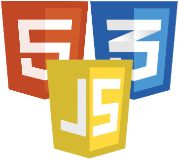
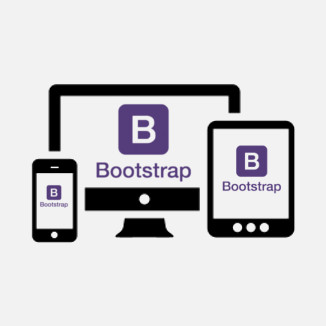
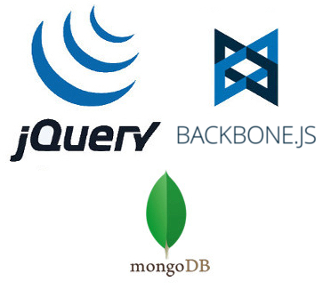
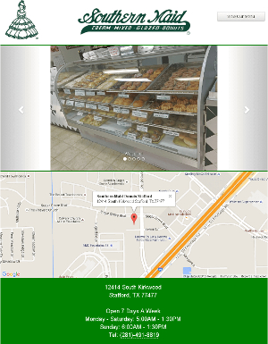

<!DOCTYPE html>
<html>

<head>
    <title>Steven Lor | Front-End Web Developer and MIS BBA</title>
    <meta name="viewport" content="width=device-width, initial-scale=1.0">
    <link rel="stylesheet" type="text/css" href="./dist/style.css">
    <link href='https://fonts.googleapis.com/css?family=Oxygen' rel='stylesheet' type='text/css'>
    <link rel="shortcut icon" href="./imgs/favicon.ico" type="image/x-icon" />
</head>

<body>
	<div class="container font">
		<div id="main-div"></div>
	</div>
	<div id="icon-footer" class="container row font">
		<div class="col-4-xs"></div>
		<div class="col-4-xs">
			<a target="_blank" href="https://github.com/renkou" class="icon-link"> Github</a>

			<a target="_blank" href="https://linkedin.com/in/steven-lor-75666193" class="icon-link"> LinkedIn</a>
		</div>
		<div class="col-4-xs"></div>
	</div> 
</body>

<script id="base-template" type="text/template">
	<nav id="top-nav" class="navbar navbar-default navbar-fixed-top">
        <div id="zero" class="container">
            <div class="navbar-header">
                <button type="button" class="navbar-toggle collapsed" data-toggle="collapse" data-target="#navbar" aria-expanded="false" aria-controls="navbar">
                    <span class="sr-only">Toggle navigation</span>
                    <span class="icon-bar"></span>
                    <span class="icon-bar"></span>
                    <span class="icon-bar"></span>
                </button>
                <div class="navbar-brand landing-button hidden-sm hidden-md hidden-lg" href="#home">Steven Lor's Portfolio</div>
            </div>
            <div id="navbar" class="navbar-collapse collapse" aria-expanded="false" style="height: 1px;">
                <ul id="nav-ul-items" class="nav navbar-nav row">
                	<li class="nav-li top-about-nav col-sm-4 top-nav-divider">
                        <a class="top-nav-item nav-about about-btn" href="#about">About</a>
                    </li>
                	<li class="nav-li top-skills-nav col-sm-4 top-nav-divider">
                        <a class="top-nav-item nav-skills skills-btn" href="#skills">Skills</a>
                    </li>
                    <li class="nav-li top-works-nav col-sm-4">
                        <a class="top-nav-item nav-works works-btn" href="#works">Works</a>
                    </li>
                </ul>
            </div>
        </div>
    </nav>

    <div id="content-container" class="container">
    </div>
</script>

<!-- templates -->
<!-- about template -->
<script id="about-container-template" type="text/template">
	<div id="about-wrapper" class="row"></div>
</script>
<script id="about-template" type="text/template">
	<div id="about-me" class="container top-spacing col-xs-12">
		<div id="self-pic-container">
			
		</div>
		<div id="self-title">Front-End Web Developer | MIS BBA</div>
		<hr width="75%" />
		<!-- <ul id="about-ul"> -->

		<div id="about-me-text" class="about-desc">Hello there! My name is Steven Lor and I'm a front-end web developer but you already knew that from the title of this site. As you can see from this portfolio, I enjoy minimalism and and  quick response times which happens to go hand in hand with each other. I usually like to plan and draw my projects first with all the information I require in order to speed up my creation process and get feedback from others.</div>

		<div id="degree" class="about-desc">I graduated from the University of Houston with a degree is MIS (Management Information Systems). While pursuing my degree I've been exposed to many areas in the business industry, including but not limited to project management, database management and international business.</div>

		<div id="current" class="about-desc">Currently I've created websites and dabbled in simple databases and mobile apps but it's fun to learn new things, especially methods that make things easier to create.</div>

		<div id="learn" class="about-desc">I would love to continue working in the technology industry because there's just so much more to learn and not enough time! I've spent my life around technology and as a first generation American in my family, I can say that it really has made life a lot easier to deal with and help my family.</div>

		<!-- </ul> -->
			<hr width="75%" />
		<div id="thanks" class="about-desc">Thank you for visiting my website and I guarantee you that there's more to come! <br /> <hr width="25%" />
		For contact information please visit my LinkedIn below.</div>
	</div>
</script>

<!-- skills template -->
<script id="skills-container-template" type="text/template">
	<div id="skills-wrapper" class="row"></div>
</script>
<script id="all-skills-template" type="text/template">
	<div id="skill-one" class="top-spacing skill-section col-sm-4">
    	<div id="skill-one-img" class="skill-img">
    		
    	</div>
    	<div id="skill-one-desc">HTML, CSS and Javascript are the standard three that all front-end developers need to know. However, I prioritize speed and functionality rather than flashy CSS tricks, unless requested, so I can guarantee you a minimalistic site that works and pleases the eyes. I'm also dabbling in LESS which will be incorporated into future websites.</div>
    </div>
    <div id="skill-two" class="top-spacing skill-section col-sm-4">
    	<div id="skill-two-img" class="skill-img">
    		
    	</div>
    	<div id="skill-two-desc">With Booststrap you be assured that the websites I develop will always be responsive and look fantastic on both mobile and desktop screens. Bootstrap also allows me to easily switch between mobile first or desktop first design without skipping a beat.</div>
    </div>
    <div id="skill-three" class="top-spacing skill-section col-sm-4">
    	<div id="skill-three-img" class="skill-img">
    		
    	</div>
    	<div id="skill-three-desc">Backbone.js has quickly become one of the greatest assests I've learned. In utilizing this MVC (Model-View-Controller) framework along with jQuery, I've been able to create very fast SPA (Single Page Application) websites and has allowed me to interact with RESTful APIs and learn the basics of MongoDB for certain projects.</div>
    </div>
</script>

<!-- works template -->
<script id="works-container-template" type="text/template">
	<div id="works-wrapper" class="row"></div>
</script>
<script id="works-template" type="text/template">
	<div id="works-showcase" class="top-spacing col-xs-12">
		<div class="work-pic">
			<a target="_blank" href="http://smdonutsstafford.com">
				
			</a>
			<div class="work-desc"><b>Southern Maid Donuts</b> - 
				<a target="_blank" href="http://smdonutsstafford.com">smdonutsstafford.com</a>
					<br />
				<div id="donut-desc">Website was created to showcase menu and provide information of this specific location. <a href="#" class="more-info">More Info</a>
				</div>
				<p id="more-donut" class="hidden">Wireframe was first drawn then discussed with others on design and interaction. This discussion is what led me to learn bootstrap to implement modern styles and design for the site and allowed to me understand more of backbone.js through hands-on experience. MongoDB approach was first attempted before utilizing a RESTful API.</p>
			</div>
		</div>
		<hr width="75%" />
		<div id="git-text">
			More projects and examples of my work can be found on my GitHub
		</div>
	</div>
</script>

<script type="text/javascript" src="./dist/app-browserify.js"></script>
</html>
